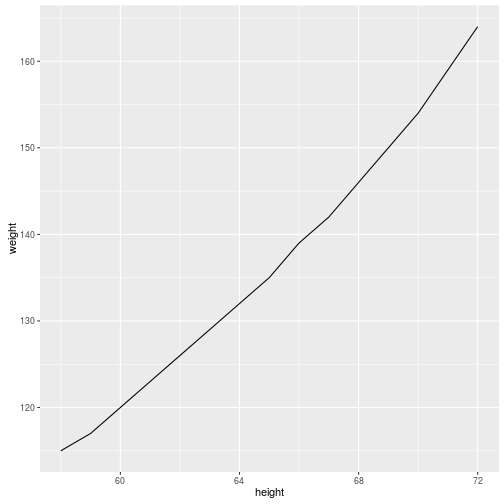

Overview slide with presentation aims
BURGr ggplot2 intro workshop
pretty graphics R way!
drbulu
Intro Slide
Beginner's Section 0
Creating ggplot objects: There are three main ways
Quote directly out of help! ?ggplot
# recommended option
ggplot(dataFrame, aes(x, y, <other aesthetics>))
# other options
ggplot(dataFrame)
ggplot()
see ?ggplot for more :)
NOTE: Can call directly or assign to variable
NOTE: None of these will produce a plot... further instruction required
Brief note: Aesthetics.. e.g. colour, point type, point size, line size
Beginner's Section 1 - Example
Will be playing with a simple dataset "women", which comes with the base (standard) R setup
Geom_Wanted!
require(ggplot2) # load ggplot2. same as library(ggplot2)
data(women) # load data
# will produce blank plot - no geom specified
myPlot = ggplot(women, aes(height, weight))
# will produce basic line graph
myPlot = ggplot(women, aes(height, weight)) + geom_line()
Note: ggplot2 allows for iterative building of complex graphics via the ➕ (plus) operator
The result
myPlot

Note: This is the result with Geom
These will also work
These
# ggplot(women) + aes(height, weight) + geom_line()
ggplot(women) + geom_line(mapping = aes(height, weight))

Takehome: There is quite a bit of flexibility in ggplot2 oject creation.
Caveat emptor!
Barplots?
Changing the Geom
# briefly explain "stat" aesthetic (i think it is an aesthetic)
myBarplot = ggplot(women, aes(height, weight)) + geom_bar(stat="identity")
myBarplot

Combining Geoms
# briefly explain "stat" aesthetic (i think it is an aesthetic)
myCustomPlot = ggplot(women, aes(height, weight)) +
geom_bar(stat="identity", color="blue", fill="yellow", size=2) +
geom_line(color="red", size = 1.5) +
geom_point(color = "green", size = 4)
Behold! The combo plot
myCustomPlot # or you can use: plot(myCustomPlot) or print(myCustomPlot)

Geek note: library vs require?
Why use require() over library()?
# option A
isLoadedByLibrary = library(ggplot2); isLoadedByLibrary
## [1] "ggplot2" "stats" "graphics" "grDevices" "utils" "datasets"
## [7] "methods" "base"
# option B
isLoadedByRequire = require(ggplot2); isLoadedByRequire
## [1] TRUE
Takehome: require can be used in control flow (e.g. dependency checking)
Slide 4
Slide content check!
Slide 5
Slide 5